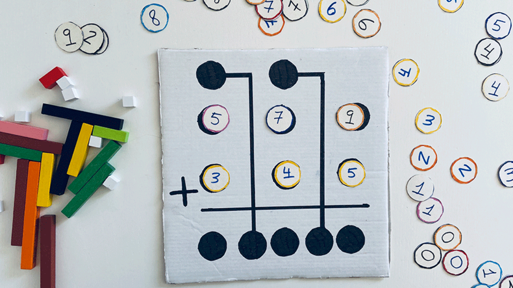

Moriana Peña
Mi experiencia en JAP
Fase 1 Esta fase me se me dificulto un poco, la caantidad de ejercicios que debiamos realizar era alta y compleja. Siempre fui una persona más de letras que de pensamiento matemático entonces necesite cambiar el "chip". Ademas como una persona procrastinadora necesite re organizar mi vida para que me diran los tiempos algo bastante duro para mi que continuo aprendiendo día a día, me ha ayudado bastante Competencias transversales.

Fase 2 Esta fase podría decir que se me díficulto bastante más que la anterior, al menos la parte de CSS y Java script, todavía siento que no estoy al nivel que se necesita, pero estoy dando lo máximo de mi para poder hacer las cosas que piden.
Por más que todo sea un reto para mi, me sigue pareciendo divertido y creo que poder disfrutarlo es gran parte del proceso